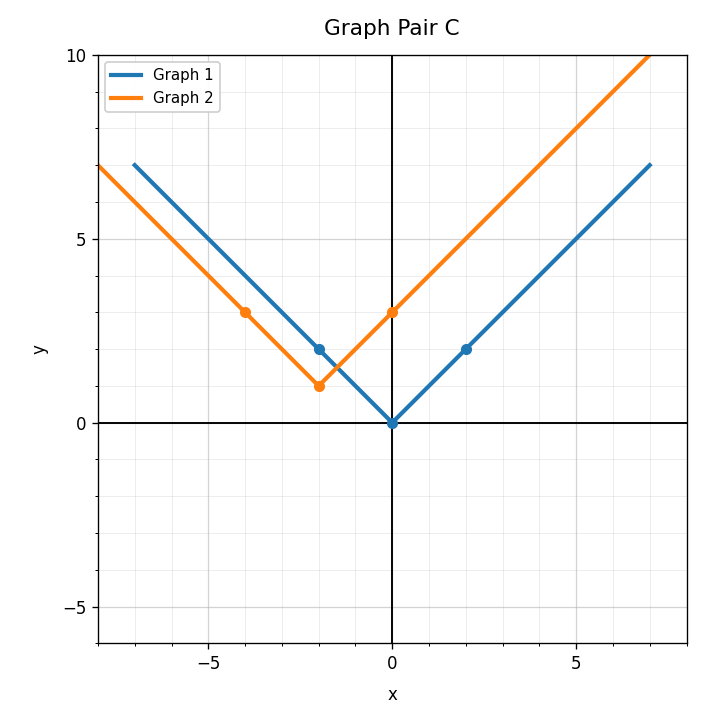

Unit 4.2: Translations
DoK 1, DoK 2, DoK 3, DoK 4Unit 3.2: Solving Systems by Substitution
4 DoK 1, 2 DoK 2, 1 DoK 3, 1 DoK 4Unit 2.2: Graphing Linear Functions
DoK 1, DoK 2, DoK 3, DoK 4Practice Set 3: This is a section-aligned spiral: 4.2 with 3.2 and 2.2. It is not a previous-section spiral.
For $g(x)=f(x+4)$, identify the direction of the horizontal translation.
Choose a parent function and write an equation that translates it down 4 units.
Use Graph Pair C. Explain what stays the same and what changes under the translation.

Design a translated quadratic function whose vertex is in Quadrant II. Provide an equation, a rough graph description, and an explanation.
If $y=5-x$ and $x=2$, what is $y$?
What does it mean for an ordered pair to solve both equations in a system?
Which equation is solved for a variable: $x=2y+1$ or $3x+2y=8$?
Does $(2,6)$ satisfy $y=2x+2$?
Solve the system by substitution.
$$x=y+1$$
$$x+2y=10$$
Two quantities satisfy $c=2s+4$ and $c=16$. Find $s$ and explain the substitution step.
When is substitution more efficient than graphing? Give a mathematical reason.
Solve a simple system by substitution and then explain how the solution would appear on a graph.
What graph feature is represented by $b$ in $y=mx+b$?
Create a table of four values for $y=-2x+6$.
Explain why two points are enough to graph a linear function.
Create a linear situation with a starting value and a constant change. Write its equation and describe the graph.